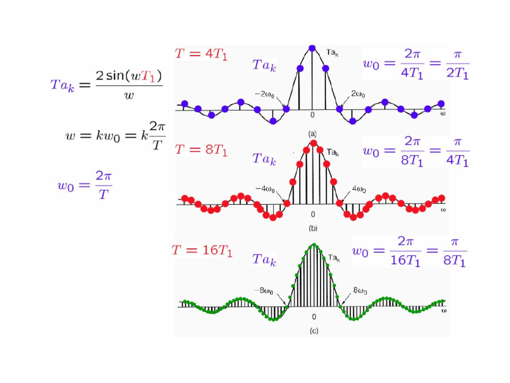
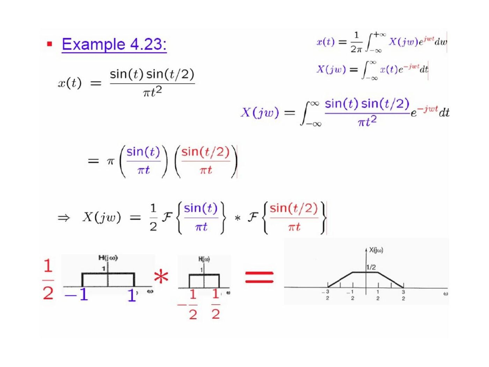

· EEM301
EEM301 Sinyaller ve Sistemler I: Chapter 4 — Sürekli Zamanlı Fourier Dönüşümü (İsmail Avcıbaş)
EEM301 – Sinyaller ve Sistemler I · 16.08.2006 · 18.10.2026
Başkent Üniversitesi EEM301 dersi için İsmail Avcıbaş’ın hazırladığı Chapter IV: Continuous Time Fourier Transform sunumu (71 sayfa). Kaynak PowerPoint’in oluşturulma tarihi 16 Ağustos 2006, son kaydı 6 Ekim 2009. Metni görsel olarak saklanan slaytların konu anlatımı, temel formülleri ve örnekleri aşağıya aktarıldı. Sunumun PDF kopyası yazının sonunda indirilebilir.
From Fourier series to Fourier transform
A finite-duration signal can be repeated with period T. Its series coefficients sample an envelope: aₖ=X(jkω₀)/T, where ω₀=2π/T. Letting T increase makes the samples denser, and the synthesis sum becomes an integral:
- X(jω)=∫₋∞^∞ x(t)e^(−jωt)dt.
- x(t)=(1/2π)∫₋∞^∞ X(jω)e^(jωt)dω.
The slides discuss finite-energy convergence and sufficient Dirichlet conditions: absolute integrability, finitely many extrema and finitely many finite discontinuities on finite intervals.

Basic transform pairs
| Time signal | Fourier transform | ||
|---|---|---|---|
| e^(−at)u(t), a>0 | 1/(a+jω) | ||
| e^(−a | t | ), a>0 | 2a/(a²+ω²) |
| δ(t) | 1 | ||
| Unit rectangle on −T₁<t<T₁ | 2sin(ωT₁)/ω | ||
| sin(Wt)/(πt) | Unit rectangle on −W<ω<W | ||
| e^(jω₀t) | 2πδ(ω−ω₀) | ||
| cosω₀t | π[δ(ω−ω₀)+δ(ω+ω₀)] | ||
| sinω₀t | (π/j)[δ(ω−ω₀)−δ(ω+ω₀)] |
The normalized sinc is sinc(θ)=sin(πθ)/(πθ). Narrower pulses have broader spectra. For e^(−at)u(t), the magnitude is 1/√(a²+ω²) and the phase is −tan⁻¹(ω/a).
Periodic signals
If x(t)=Σaₖe^(jkω₀t), its transform is X(jω)=2πΣaₖδ(ω−kω₀). The periodic impulse train Σδ(t−kT) transforms to (2π/T)Σδ(ω−2πk/T).
Transform properties
| Operation | Transform | ||
|---|---|---|---|
| ax(t)+by(t) | aX(jω)+bY(jω) | ||
| x(t−t₀) | e^(−jωt₀)X(jω) | ||
| e^(jω₀t)x(t) | X(j(ω−ω₀)) | ||
| x*(t) | X*(−jω) | ||
| x(at), a≠0 | X(jω/a)/ | a | |
| dx/dt | jωX(jω) | ||
| t x(t) | j dX(jω)/dω |
For real x(t), X(−jω)=X*(jω); its magnitude is even and its phase is odd where defined. The even part transforms to Re X and the odd part to j Im X.
Integration from −∞ to t transforms to X(jω)/(jω)+πX(0)δ(ω). In particular u(t) transforms to 1/(jω)+πδ(ω), interpreted in the generalized sense.
Duality exchanges time and frequency with a reversal and a 2π factor. Parseval’s relation is ∫|x(t)|²dt=(1/2π)∫|X(jω)|²dω.
The examples form a stepped pulse as the sum of two shifted rectangles, and obtain the transform of a finite ramp by differentiating it into a rectangle plus endpoint impulses.
Convolution and frequency response
y=x∗h corresponds to Y=XH. A cascade has frequency response H₁H₂ and a parallel combination has H₁+H₂. A pure delay has H(jω)=e^(−jωt₀); differentiation has H(jω)=jω.
An ideal lowpass filter with unit gain on |ω|<ω꜀ has h(t)=sin(ω꜀t)/(πt). The slides compare this with the causal exponential response e^(−t)u(t), whose response is 1/(1+jω).
For h(t)=e^(−at)u(t) and x(t)=e^(−bt)u(t), a,b>0:
- If a≠b, y(t)=[e^(−at)−e^(−bt)]u(t)/(b−a).
- If a=b, y(t)=t e^(−at)u(t).
Cascading two ideal lowpass responses retains the smaller cutoff.
Multiplication and modulation
Multiplication in time corresponds to convolution in frequency with the factor 1/(2π). For r(t)=s(t)cosω₀t:
R(jω) = [S(j(ω−ω₀))+S(j(ω+ω₀))]/2.
Multiplying again by cosω₀t produces a baseband term s(t)/2 and shifted copies around ±2ω₀. A lowpass filter can isolate the baseband component. Another example multiplies two sinc functions, obtaining a trapezoidal spectrum from convolution of their rectangular spectra.

Constant-coefficient differential equations
For Σaₖ dᵏy/dtᵏ=Σbₖ dᵏx/dtᵏ, the LTI frequency response is
H(jω) = [Σbₖ(jω)ᵏ]/[Σaₖ(jω)ᵏ].
Example: y″+4y′+3y=x′+2x gives
H(jω)=(jω+2)/[(jω+1)(jω+3)] = (1/2)/(jω+1)+(1/2)/(jω+3),
so h(t)=[e^(−t)+e^(−3t)]u(t)/2. With x(t)=e^(−t)u(t), the output becomes
y(t)=[(1/4)e^(−t)+(1/2)t e^(−t)−(1/4)e^(−3t)]u(t).